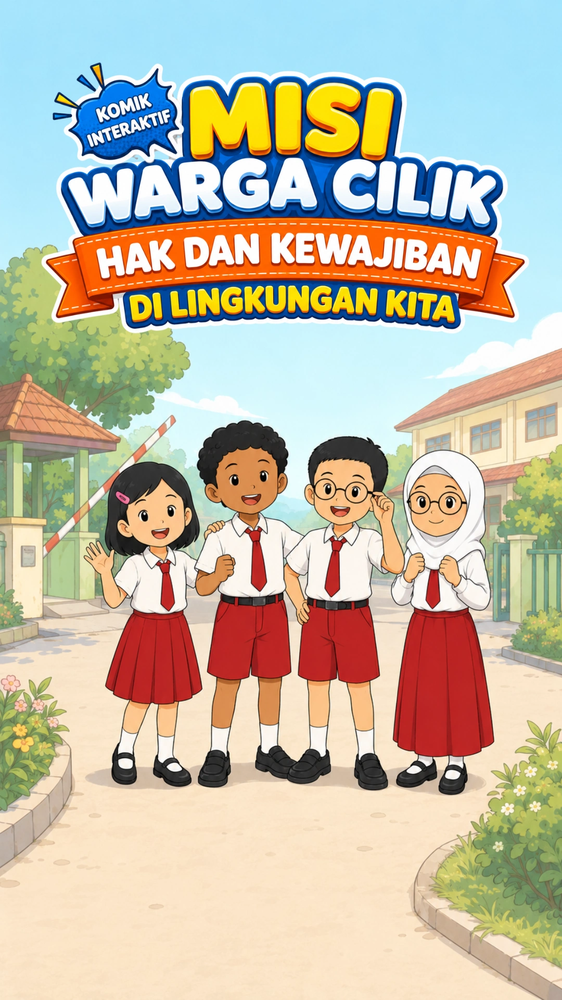

01FREELANCE / FULL-STACK DEVELOPMENT
Misi Warga Cilik
A mobile-first educational web app built to help primary-school children explore learning objectives through interactive digital comics and quizzes, in collaboration with a PGSD final-research project.